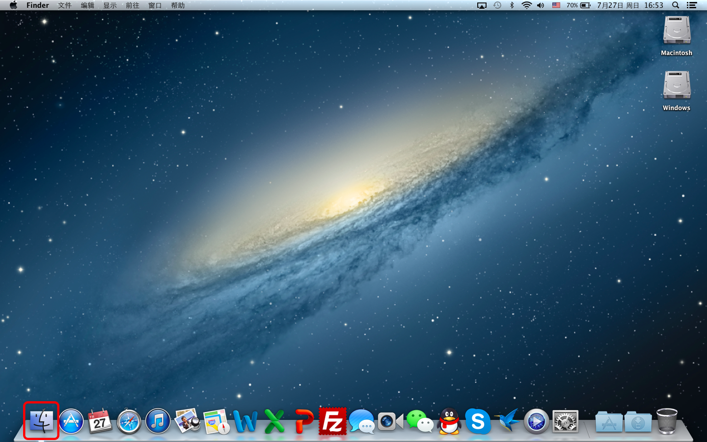
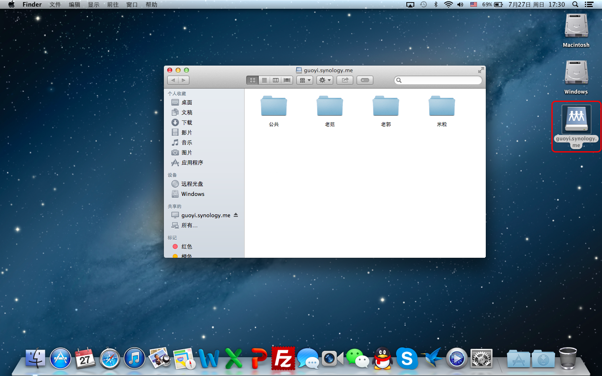

说明
Mac OS X（即苹果系统）如Windows一样，也支持通过FTP, HTTP, 以及WebDAV三种不同方式访问服务器。由于WebDAV本身具备安全性高，传输速度快，及支持所有文件操作的优点，也因为Mac OS X在不需进行任何配置的情况下即可顺利进行WebDAV访问，故本章节只介绍如何在Mac OS X环境下通过WebDAV访问服务器。
- 在桌面环境下，左键单击Finder。

- 在顶部菜单栏单击前往，然后单击连接服务器。
- 在弹出窗口输入服务器WebDAV地址，并单击连接登录。
http://guoyi.synology.me:5005
注：如您使用个人计算机登录，在输完服务器地址后可单击地址栏右边的+以将该地址添加至下方个人收藏服务器列表。如此，您的服务器地址将被保存，以免去您下次登录重新输入地址之劳。反之，如您使用公共计算机，请切忌如此做！
- 在弹出窗口确保选择注册用户，输入您的用户名和密码，并单击连接登录。
注：如您使用个人计算机登录，可考虑选中在我的钥匙串中记住此密码。如此，您的用户名和密码将被保存，以免去您下次登录重新输入密码之劳。反之，如您使用公共计算机，请切忌如此做！
- 如连接成功，您可看到如下图所示窗口。至此，您已成功登录，并可在授权文件夹下进行所有文件操作。如未看到所示窗口，请双击桌面上的服务器快捷方式以打开。例如在下图中，该快捷方式被自动命名为guoyi.synology.me。

- 当您完成工作，请务必如下图所示断开连接！
在窗口左侧侧边栏找到服务器，并单击以将其推出。
或
右键单击桌面上的服务器快捷方式（下图为guoyi.synology.me），并单击推出"<服务器名>"（下图为推出"guoyi.synology.me"）。